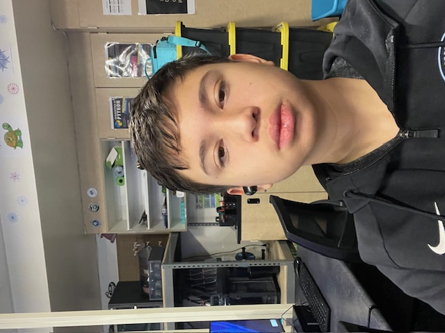

About Me

Basic Information
Name: Angelo
Place of Birth: United States
About Me
Hi, my name is Angelo. I am interested in web development and enjoy learning how websites are built and styled. I like working on projects that challenge me to think logically and creatively.
This portfolio includes projects such as a café menu, a CSS-based cat drawing, and a registration form. These projects helped me improve my understanding of HTML, CSS, and proper website structure.
Hobbies
- Playing soccer
- Playing chess
- Learning to code
- Basketball
Goals for the Future
My goal is to continue improving my programming skills while also pursuing soccer at the college level. I want to keep building more advanced projects and eventually work in a technology-related field.